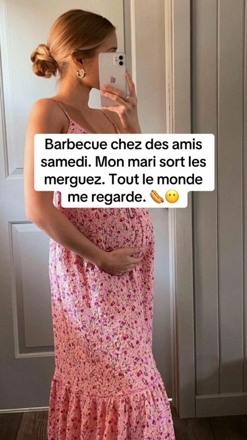
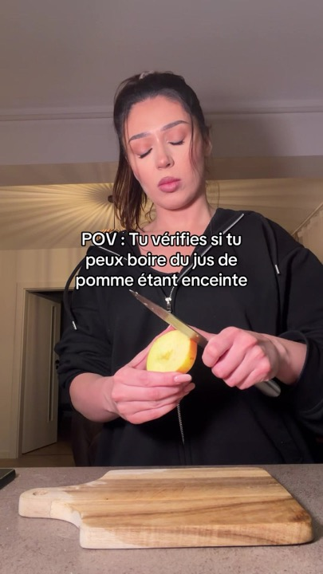
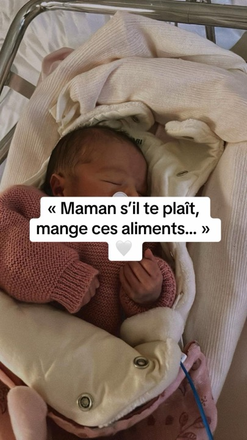
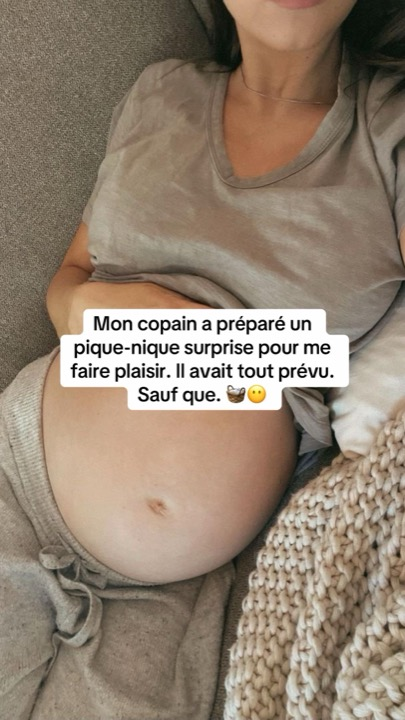

Chapitre premier · Pourquoi ce stage
Tout ce que j'ai appris en faisant décoller une app sur TikTok, raconté sans rien cacher.
Dix parties, deux lives par semaine, un petit groupe. Je ne suis pas marketeur, je suis développeur : j'ai testé, je me suis trompé, j'ai regardé les chiffres. Le Stage, c'est ce carnet, ouvert.

Sacha Clauzade, créateur de BellySafe. 5 744 € en octobre, sans un euro de pub.



